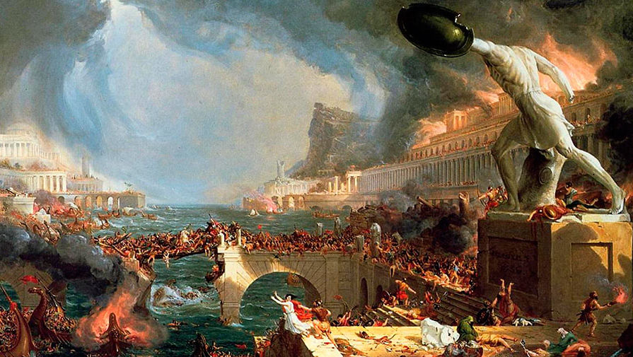

Римська Імперія
Відео
Значення великої Римської імперії, що колись простягалася на чималих територіях від туманної Англії до спекотної Сирії в контексті загальносвітової історії надзвичайно велике. Можна навіть сказати, що саме Римська імперія була предтечею загальноєвропейської цивілізації, багато в чому сформувавши її вигляд, культуру, науку, право (юриспруденція середньовіччя ґрунтувалася на римському праві), мистецтво, освіту. І в нашій сьогоднішній мандрівці у часі ми з вами вирушимо у древній Рим, вічне місто, що стало центром самої грандіозної імперії в історії людства.
Територія імперії
В епоху своєї найвищої могутності кордони Римської імперії простягалися від територій сучасної Англії та Іспанії на Заході і до територій сучасних Ірану, Сирії на Сході. На півдні ж під п’ятою Риму перебувала вся Північна Африка. Зрозуміло, межі Римської імперії були не постійними і після того, як Сонце римської цивілізації стало йти до заходу, а сама імперія приходити в занепад, зменшувалися і її межі.
Територія імперіїВійни
Хоча правильніше було б назвати цей підпункт «війни римської республіки», яка хоча і воювала з самого початку своєї історії, але окрім дрібних сутичок з сусідніми племенами траплялися і дійсно великі війни, що стрясали тодішній античний світ. Першою дійсно великою війною Риму було зіткнення з грецькими колоніями. В ту війну втрутився грецький цар Пірр, якому хоч і вдалося перемогти римлян, тим не менш, його власна армія зазнала величезних і непоправних втрати. З тих часів вислів «Піррова перемога» став прозивним, що означає перемогу занадто великою ціною, перемогу практично рівну поразці. Чстиною загальносвітової , римляни зіткнулися на Сицилії з ще однією великою державою – Карфагеном, колишньою фінікійською колонією. Протягом довгих років Карфаген став головним суперником Риму, суперництво ж їх вилилося в три пунічні війни, в яких Рим здобув перемогу.
Перша пунічна війна велася за острів Сицилію, після перемоги римлян в морській битві біля Егатських островів, в ході якої римляни наголову розбили карфагенський флот, вся Сицилія стала частиною римської держави.
Прагнучи взяти у римлян реванш за поразку в першій пунічній війні, талановитий карфагенський полководець Ганнібал Барка в ході другої пунічної війни спочатку висадився на іспанському узбережжі, потім разом з союзними іберійськими та галльськими племенами здійснив легендарний перехід через Альпи, вторгшись вже на територію безпосередньо римської держави. Там він завдав ряд нищівних поразок римлянам, особливо відчутною була битва біля Канн. Доля Риму повисла на волосині, але Ганнібалові таки не вдалося довершити почате. Взяти сильно укріплене місто Ганнібал не зміг, і був змушений покинути Апенінський півострів. З тих пір військова вдача зрадила карфагенянам, римські війська під командуванням не менш талановитого полководця Сципіона Африканського завдали нищівної поразки армії Ганнібала. Друга пунічна війна знову була виграна Римом, який після перемоги в ній перетворився на справжнісіньку наддержаву стародавнього світу.Культура
Культура Римської імперії є важливою й істотною частиною загальносвітової культури, її невід’ємною частиною. Багатьма її плодами ми користуємося і по цей день, наприклад, каналізація, водопровід, прийшли до нас із стародавнього Риму. Саме римляни перші винайшли бетон і активно розвинули містобудівне мистецтво. Вся європейська кам’яна архітектура бере свій початок в стародавньому Римі. Саме римляни першими почали будувати кам’яні багатоповерхові будинки (так звані інсули), що досягали деколи до 5-6 поверхів (правда, перші ліфти винайшли лише через 20 століть).
Бої гладіаторів.
Великою любов’ю простих римлян також користувалися гонки на колісницях, які були дуже небезпечними і нерідко супроводжувалися загибеллю невдалих візничих. Великий розвиток у стародавньому Римі мав театр, більш того, один з римських імператорів, Нерон мав дуже сильну пристрасть до театрального мистецтва, що сам нерідко грав на сцені, декламував вірші. Причому за описом римського історика Светонія робив це він не дуже вміло, так що спеціальні люди навіть стежили за глядачами, щоб ті не в якому разі не спали і не покидали театр під час виступу імператора. Багаті патриції навчали своїх дітей грамоті та різним наукам (риториці, граматиці, математиці, ораторському мистецтву) або зі спеціальними вчителями (часто в ролі вчителя міг бути і якийсь освічений раб) або ж у спеціальних школах. Римська чернь, бідні плебеї, були, як правило, неписьменними.